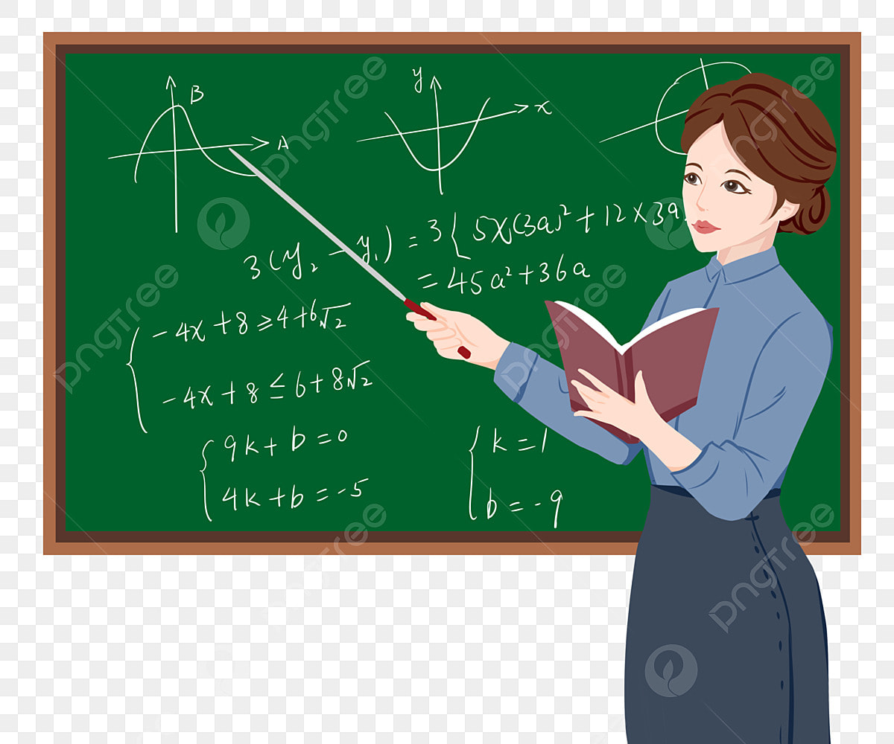

Selamat Datang di Pelajaran Perbandingan Kelas 7
Dalam pelajaran ini, Anda akan mempelajari dasar-dasar perbandingan, bagaimana menghitung perbandingan, dan contoh soal serta latihan dan juga kuis untuk memperdalam pemahaman Anda. SELAMAT BELAJAR
